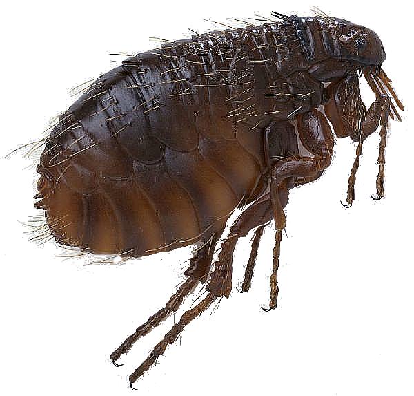
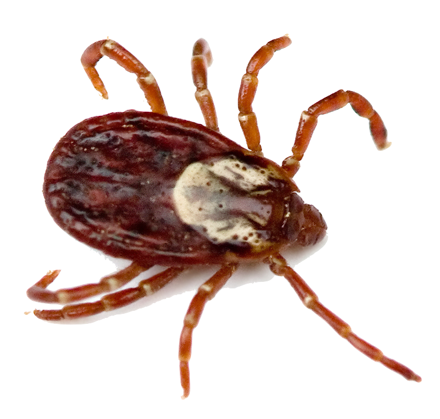
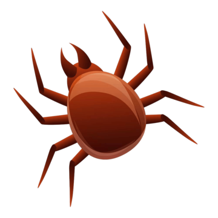

Veterinārās pārbaudes ir tikpat svarīgas kā cilvēku ikgadējās veselības apskates, jo tās palīdz laikus atklāt un novērst potenciālos veselības riskus.
Kaķa veselība
Regulāra aprūpe un uzmanība palīdz laikus pamanīt izmaiņas kaķa pašsajūtā un novērst veselības problēmas.
Ievads kaķu veselībā
Kaķa veselība ir tieši atkarīga no uztura, vides un regulārām veterinārajām pārbaudēm. Agrīna slimību atklāšana un profilaktiska aprūpe nodrošina ilgāku un laimīgāku dzīvi.
Šajā sadaļā atradīsiet noderīgus padomus par slimību pazīmēm, profilaktiskiem pasākumiem un veterinārās aprūpes nozīmi.
Veterinārās aprūpes nozīme
Regulāras veterinārās apskates
Ieteicams mājdzīvnieku vest pie veterinārārsta vismaz reizi gadā, bet kaķus gados un hroniski slimus kaķus pat biežāk.
- Pieaugušiem kaķiem vismaz reizi gadā jāveic pilnīga veterinārā pārbaude.
- Kaķēniem nepieciešama veterinārārsta vizīte parasti ik pēc 3 līdz 4 nedēļām, līdz tie ir aptuveni 4 mēnešus veci.
- Vecākiem kaķiem (vecākiem par 8 līdz 9 gadiem) veterinārārsts ir jāapmeklē divas reizes gadā vai biežāk.
Jūsu veterinārārsts var ieteikt jūsu mājdzīvniekam veselības programmu, piemēram, regulāras asins analīzes, lai uzraudzītu agrīnas nieru vai aknu slimības.
Slimības pazīmes
Tā kā jūs savu kaķi pazīstat labāk nekā jebkurš cits, jums rūpīgi jāuzrauga smalkas slimības pazīmes.
- Vispārējas slimības pazīmes ir apetītes trūkums vai aktivitātes samazināšanās.
- Citas specifiskākas pazīmes ir vemšana un caureja, biežāka vai retāka urinēšana, klepus un šķaudīšana vai izvade no acīm, ausīm vai deguna.
- Slimība var izpausties arī kā spalvu izkrišana vai niezošas vietas uz ādas vai ap ausīm.
- Skeleta un muskuļu sistēmas problēmas bieži manāmas kā stīvums vai klibošana, piemēram, kaķis uz kājas neliek svaru.
- Ja jūsu kaķim ir kāda no šīm pazīmēm ilgāk par dienu vai divām, ieteicams apmeklēt veterinārārstu.
Zāļu došana
Tablešu iebarošana kaķim var būt izaicinājums.
- Daži kaķi iedzers tableti, kas ir paslēpta nelielā kārumā, piemēram, tunča vai vistas gabalā.
- Šādos gadījumos jums būs jāiemācās iedot tableti, panākot to, ka viņš vai viņa skatītos uz augšu (tas ir, uz griestiem), atverot muti un ievietojot tableti tieši mutes aizmugurē, lai to varētu norīt.
- Šķidrumu var iedot ar šļirci kaķa mutes aizmugurē, ievietojot šļirces galu netālu no aizmugurējiem zobiem abās pusēs.
Neatkarīgi no zāļu veida vai iedošanas veida ir svarīgi izlasīt un ievērot visus etiķetes norādījumus.
Vakcinācijas
Vakcinācija ir galvenā profilaktiskās medicīnas sastāvdaļa kaķiem, tāpat kā suņiem un cilvēkiem.
Kaķiem regulāri tiek ievadītas vairākas vakcīnas kā galvenā aizsardzība pret nopietnām infekcijas slimībām (piemēram, panleikopēniju, herpesvīrusu).
Revakcinācija var būt nepieciešama visā kaķa dzīves laikā, lai nodrošinātu pastāvīgu aizsardzību.
Parazītu kontrole
Kaķus var inficēt vairāki iekšējie un ārējie parazīti, kas ietekmē veselību un labsajūtu. Regulāra profilakse palīdzēs aizsargāt jūsu mīluli.
Iekšējie parazīti
Kaķus var inficēt apaļtārpi, lenteņi un citi zarnu parazīti. Regulāras attārpošanas procedūras novērš infekciju risku

Blusas
Blusu kodumi izraisa niezi un var izplatīt slimības. Pretblusu līdzekļi un tīra vide palīdz novērst šo problēmu.

Ērces
Ērces var pārnēsāt infekcijas, kas ietekmē kaķa veselību. Pēc pastaigas ārā regulāri pārbaudiet kaķa kažoku.

Kašķa ērces
Šie mikroskopiskie parazīti izraisa niezi un ādas kairinājumu. Veterinārā diagnoze un ārstēšana ir būtiska.
Profilakses pasākumi
- Regulāri attārpojiet kaķi, izmantojot veterinārārsta ieteiktus līdzekļus.
- Izmantojiet pretblusu un pretērču līdzekļus saskaņā ar ieteikumeim.
- Regulāri tīriet kaķa guļvietu un vidi, lai samazinātu parazītu izplatību.
- Pēc pastaigām ārā pārbaudiet kažoku un ādu, īpaši ērču sezonā
Zobu aprūpe
Kaķiem visu mūžu nepieciešama zobu aprūpe.
Jūs varat palīdzēt uzturēt kaķa zobus un smaganas labā stāvoklī, barojot ar sausu barību un ievērojot profesionālu zobu tīrīšanas programmu, ko veic jūsu veterinārārsts.